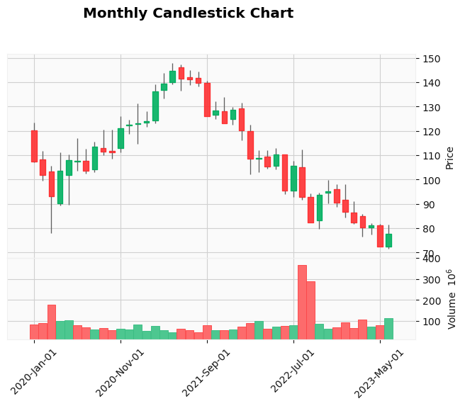
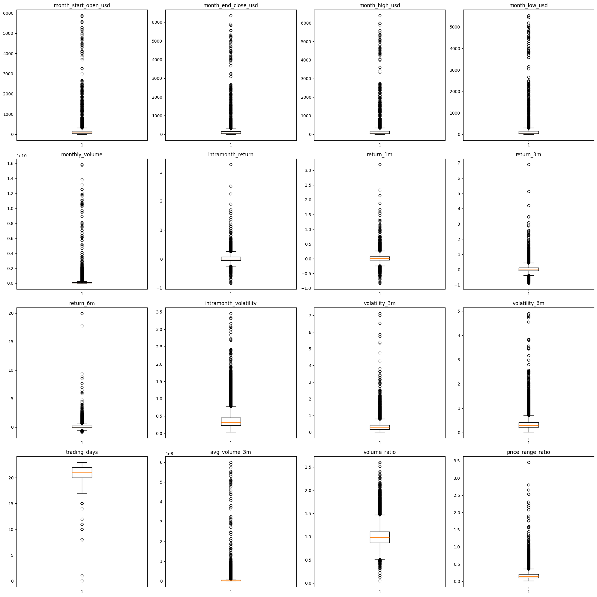
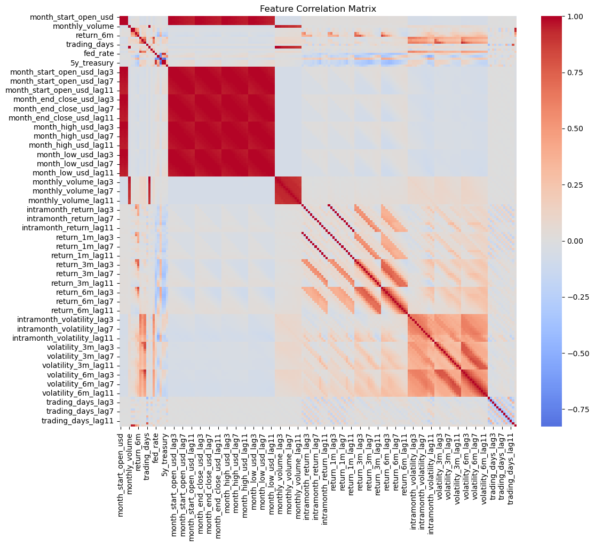

25,618
training target rows
616
July 2023 inference rows
~0.898
best classification F1
~0.033
best regression RMSE
End-to-End Workflow
Raw CSVs
→
Data checks
→
EDA
→
Feature engineering
→
Model comparison
→
Prediction output
Interactive Model Result View
Candlestick Example

OHLC and volume view for one stock.
Outlier Overview

Visual quality check for numeric features.
Correlation Heatmap

Correlation structure around excess return.
Business Question
Can price, volume, company profile, and macro features help identify stocks likely to outperform the index and estimate excess return?
Portfolio Skills Shown
Data cleaningRegex validationEDAFeature pipelinesClassificationRegressionTime-aware validation
Important Limitation
This is a portfolio and learning project. Return prediction is noisy and the output should not be treated as financial advice or an operational trading system.